정보처리기사(구) (2009-05-10 기출문제)
1과목: 데이터 베이스
1. 분산 데이터베이스의 불법적인 접근을 차단하기 위하여 데이터 암호화가 필요하다. DES 알고리즘에서는 평문을 (①) 비트로 블록화를 하고, 실제 키의 길이는 (②) 비트를 이용한다. 괄호의 내용으로 옳게 짝지어진 것은?
- ① 64 ② 56
- ① 64 ② 32
- ① 32 ② 16
- ① 32 ② 8
(정답률: 54%)

2. 다음과 같은 함수 종속 관계의 추론은 어떤 규칙에 의한 것인가?
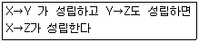
- 이행규칙
- 재귀규칙
- 연합규칙
- 첨가 규칙
(정답률: 73%)
3. 데이터베이스 설계단계중 물리적 설계에 해당하는 것은?
- 데이터 모형화와 사용자 뷰들을 통합 한다.
- 사용자들의 요구 사항을 확인하고, 메타 데이터를 수집, 기록한다.
- 파일 조직 방법과 저장방법, 그리고 파일 접근 방법 등을 선정한다.
- 사용자들의 요구사항을 입력으로 하여 응용프로그램의 골격인 스키마를 작성한다.
(정답률: 60%)
4. 다음 릴레이션의 Degree 와 Cardinality를 옳게 구한 것은?
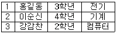
- Degree : 4, Cardinality : 3
- Degree : 3, Cardinality : 4
- Degree : 3, Cardinality : 12
- Degree : 12, Cardinality : 3
(정답률: 61%)
5. 병렬처리에 있어서 자원에 대한 로킹(Locking)은 필수적이다. 로킹의 단위가 작은 경우와 비교하여 큰 경우에 대한 설명으로 거리가 먼것은?
- 병행성의 수준이 높아진다.
- 로크(Lcok)의 수가 적어진다.
- 병렬제어 기법이 간단해 진다.
- 교착상태의 경우가 적어진다.
(정답률: 58%)
6. STUDENT 테이블은 50개의 튜플이 정의되어 있으며 “S-AGE"열의 값은 정수 값으로 되어 있다. "S-AGE" 값이 18인 튜플이 10개, 19인 튜플이 35개, 20인 튜플이 5개일 경우, 다음 두 SQL의 실행 결과 값을 순서대로 옳게 나타낸 것은?
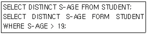
- 50, 40
- 50, 5
- 3, 5
- 3,1
(정답률: 40%)
7. 다음과 같은 트랜잭션의 특징은?
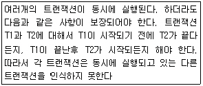
- Atomictiy
- Consistency
- Isolation
- Durability
(정답률: 58%)
8. 다음과 같이 오름차순 정렬되었을 경우 적용된 정렬기법은 무엇인가?
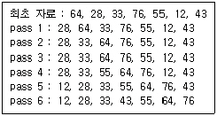
- Selection Sort
- Bubble Sort
- Insertion Sort
- Shell Sort
(정답률: 43%)
9. What are general configuration of indexed sequential file?
- Index area, Mark area, Overflow area
- Index area, Prime area, Overflow area
- Index area, Mark area, Excess area
- Index area, Prime area, Mark area
(정답률: 51%)
10. 뷰(View)에 대한 설명으로 옳지 않은 것은?
- 뷰는 독자적인 인덱스를 가질수 있다.
- DBA는 보안 측면에서 뷰를 활용할수 있다.
- 뷰 위에 또 다른 뷰를 정의할수 있다.
- 뷰는 삽입, 삭제, 갱신 연산에 많은 제한을 가지고 있다.
(정답률: 59%)
11. 데이터베이스의 특성 중 다음 설명에 해당하는 것은?
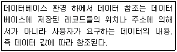
- Content Reference
- Concurrent Sharing
- Continuous Evolution
- Time Accessibility
(정답률: 72%)
12. 순서가 A, B, C, D로 정해진 입력 자료를 스택에 입력 하였다가 출력한 결과로 가능한 것은?
- D, B, C, A
- D, C, A, B
- C, D, A, B
- B, C, D, A
(정답률: 57%)
13. 외래키(Foreign Key)에 대한 설명으로 옳지 않은 것은?
- 외래키는 하나의 릴레이션에 존재하는 후보 키들 중에서 기본키를 제외한 나머지 후보키들을 의미한다.
- 외래키는 현실 세계에서 존재하는 개체타입들 간의 관계를 표현하는데 중요한 역할을 수행한다.
- 관계형 데이터 모델에서 한 릴레이션의 외래키는 참조되는 릴레이션의 기본키와 대응되어 릴레이션간에 참조 관계를 표현하는 중요한 도구이다.
- 외래키를 포함하는 릴레이션이 참조하는 릴레이션이 되고, 대응되는 기본키를 포함하는 릴레이션이 참조 릴레이션이 된다.
(정답률: 57%)
14. 논리적 데이터의 독립성(Logical Data Independence)를 설명한 것은?
- 데이터베이스의 논리적 구조를 수정하지 않고 데이터베이스의 물리적 구조를 변경시킬수 있다.
- 개별 사용자나 응용 프로그램의 데이터 관점을 변경하지 않고 전체 데이터베이스의 논리적 구조를 변경시킬 수 있다.
- 물리적인 파일 구조를 변경하더라도 개념적 스키마는 영향을 받지 않는다.
- 응용 프로그램에 영향을 주지 않고 데이터의 물리적 구조를 변경할 수 있다.
(정답률: 45%)
15. 데이터 중복으로 인해 릴레이션 조작시 예상하지 못한 곤란한 현상이 발생한다. 이를 무엇이라고 하는가?
- Normalization
- Degree
- Cardinality
- Anomaly
(정답률: 64%)
16. 중위 표기법으로 표현된 다음 수식을 후위 표기법으로 옳게 표현한 것은?
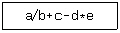
- a/b+c=d*e
- ab/c+de*-
- -+/abc*de
- a/b+-de*c
(정답률: 67%)
17. 개체-관계(Entity-Relationship) 모델을 최초로 제안한 사람은?
- P. Chen
- E.F Codd
- Bill Gates
- Lawrence J. Ellison
(정답률: 72%)
18. Which is the design step of database correctly?
- Requirement Formulation→Conceptual Schema→Physical Sehema→Logical Schema
- Logical Schema→Requirement Formulation→Conceptual Schema→Physical Sehema
- Requirement Formulation→Conceptual Schema→Logical Schema→Physical Sehema
- Logical Schema→Requirement Formulation→Physical Sehema→Conceptual Schema
(정답률: 67%)
19. 스택을 이용하는 예로써 옳지 않은 것은?
- 부프로그램 호출시 복귀주소의 저장
- 운영체제의 작업 스케줄링
- 컴파일러를 이용한 언어번역
- 재귀 프로그램의 순서 제어
(정답률: 50%)
20. 다음 중 BCNF를 만족하기 위한 조건 모두로 옳게 짝지어진 것은?
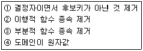
- ①
- ①, ②, ③, ④
- ②, ③, ④
- ①, ④
(정답률: 63%)
2과목: 전자 계산기 구조
21. I/O 장치 인터페이스와 컴퓨터시스템 사이에 데이터의 이동을 제어하기 위한 장치는?
- I/O 장치 인터페이스
- I/O 버스
- I/O 제어기
- I/O 장치
(정답률: 50%)
22. 인터럽트 체계의 동작을 나열하였다. 수행 순서가 옳은 것은?
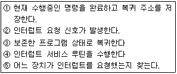
- ②→①→⑤→④→③
- ②→①→④→⑤→③
- ②→⑤→①→④→③
- ②→④→⑤→①→③
(정답률: 63%)
23. 인터럽트 요청 판별방법에 관한 내용중 옳지 않은 것은?
- S/W에 의한 판별 방법은 폴링에 의한 방법이라고도 한다.
- H/W에 의한 판별 방법은 장치번호 버스를 이용한다
- S/W에 의한 판별 방법은 인터럽트 처리 루틴이 수행한다.
- H/W에 의한 판별 방법은 S/W에 의한 판별 방법 보다 속도가 느리다.
(정답률: 60%)
24. 복수 모듈 기억장치의 설명으로 옳지 않은 것은?
- 독자적으로 데이터를 저장할 수 있는 기억장치 모듈을 여러개 가진 기억장치로 주기억장치와 CPU의 속도 차이 문제점을 개선한다.
- 기억장치 버스를 시분할하여 사용하며 기억장소의 접근을 보다 빠르게 한다.
- 복수 모듈 기억장치에 사용되는 각각의 기억장치는 자체의 어드레스 레지스트와 버퍼레지스터를 가지고 독자적으로 데이터를 저장할 수 있다.
- 인터리빙 기법을 이용하여 m개의 모듈로 구성된 기억장치에서 m개의 연속적인 명령을 동시에 패치하는 것이 가능하다.
(정답률: 39%)
25. 캐시 메모리의 매핑방법 중 같은 인덱스를 가졌으나 다른 tag를 가진 두개 이상의 워드가 반복하여 접근된다면 히트율이 상당히 떨어질 수 있는 것은?
- Associative 매핑
- Set-Associtative 매핑
- Direct 매핑
- Indirect 매핑
(정답률: 40%)
26. 일반적으로 n비트의 2진 병렬 가산은 어떻게 구성 되는가?
- 2n 개의 반가산기로 구성
- 2n 개의 전가산기로 구성
- n개의 반가산기로 구성
- n개의 전가산기로 구성
(정답률: 33%)
27. 수동 소수점 파이프라인의 비교기, 쉬프트, 가산-감산기, 이크리멘터/디크르멘터가 모두 조합회로로 구성된다. 이때 네 세그먼트의 시간 지연이 t1=60ns, t2=70ns, t3=100ns, t4 =80ns이고 중간 레지스터의 지연이 tr=10ns 라고 가정하면 클럭 사이클은 얼마로 결정되어야 하는가?
- 60ns
- 110ns
- 310ns
- 320ns
(정답률: 47%)
28. CPU가 어떤 명령과 다음 명령을 수행하는 사이를 이용하여 하나의 데이터 워드를 직접 전송하는 DMA 방식을 무엇이라고 하는가?
- Word Stealing
- Word Transfer
- Cycle Stealing
- Cycle Transfer
(정답률: 55%)
29. 다음과 같은 마이크로 오퍼레이션이 일어나는 상태는?
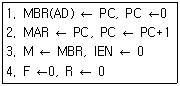
- Fecth
- Indirect
- Interrupt
- Execute
(정답률: 55%)
30. 중앙처리장치와 기억장치 사이에 실질적인 대역폭(Band-Width)을 늘리기 위한 방법으로 사용하는 것은?
- 메모리 인터리빙
- 자기기억장치
- RAM
- 폴링기법
(정답률: 62%)
31. 컴퓨터 내부에서 시스템의 상태를 나타내는 것은?
- SP
- PSW
- Interrupt
- MAR
(정답률: 55%)
32. 연산에 필요한 데이터나 데이터의 위치를 찾는 방법을 주소지정방식(Addressing mode)이라고 하는데 이는 오퍼랜드가 어떻게 구성되느냐에 따라 다르기도 하다. 다음 주소 지정방식 가운데 연산 속도가 가장 빠른것은?
- Direct addressing mode
- Indirect addressing mode
- Calculate addressing mode
- Immediate addressing mode
(정답률: 49%)
33. 부동 소수점인 두 수의 나눗셈을 위한 순서를 올바르게 나열한 것은?
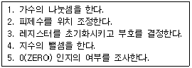
- 3-2-4-1-5
- 5-3-2-1-4
- 3-2-1-4-5
- 5-3-2-4-1
(정답률: 47%)
34. 다음과 같은 조건값에서 각 명령어를 모두 수행한 후의 R1값과 두 번째 오퍼랜드의 유효 주소는?(단, #은 직접모드, @는 간접모드를 의미하며 레지스터값은 R1=10, R2=20)
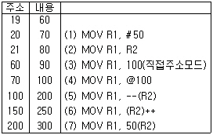
- R1=100, 유효주소=70
- R1=200, 유효주소=70
- R1=100, 유효주소=60
- R1=200, 유효주소=60
(정답률: 36%)
35. 입출력을 위해 DMA 전송의 초기 준비에 프로세서의 1000클럭이 소요되고 DMA 완료시 인터럽트 처리에 프로세서의 500클럭 사이클이 쓰여지는 시스템이 있다. 하드디스크는 초당 4MB를 전송하며 DMA를 사용할 때 디스크로 부터의 평균 전송량이 8KB이면 디스크가 전송에 100% 쓰여질 경우 500MHz 프로세서의 클럭 사이클 중 얼마만큼이 사용되는가?
- 2*10-3
- 20*10-3
- 700*103
- 750*103
(정답률: 30%)
36. 펜티엄 프로세서를 사용한 컴퓨터에서 베이스 주소 지정방식을 나타낸 것은?(단, SR=세그먼트 레지스터, BR=베이스 레지스터, IX=인덱스 레지스터, A=오퍼랜드 필드의 내용, EA=유효주소, LA=선형주소를 나타낸다)
- EA=R, LA=R
- EA=A, LA=(SR)+EA
- EA=(BR), LA=(SR)+EA
- EA=(BR)+A, LA=(SR)
(정답률: 44%)
37. 다음은 산술 시프트(Arithmetic Shift)에 관한 설명이다. 옳지 않은 것은?
- 레지스터의 값을 우측으로 쉬프트할 때 새로운 입력비트는 1의보수, 2의보수 모두 0이 입력된다.
- 레지스터의 값을 좌측으로 쉬프트 할 때 새로운 입력 비트는 1의 보수의 경우 부호 비비트가 입력되고, 2의 보수의 경우 무조건 0이 입력된다.
- 레지스터의 값을 N비트 우측으로 시프트하면 2n으로 나누는 효과를 갖는다
- 1의 보수 표현방식으로 레지스터에 저장된 값이 최상위 비트인 부호비트와 최하위 비트인 LSB가 서로 다를 때 우측 시프트를 수행하면 잘림 에러(Truncation Error)가 발생한다.
(정답률: 41%)
38. 다음 중 제어주소 레지스터(Control Address Register)에 적재 될 수 없는 것은?
- MAR(Memory Address Register)의 내용
- 사상(Mapping)의 결과값
- 주소 필드(Address Field)
- 서브루틴 레지스터(Subroutine Register)의 내용들
(정답률: 37%)
39. 인터럽트 체제의 기본 요소에 속하지 않은 것은?
- 인터럽트 처리 기능
- 인터럽트 요청 처리
- 인터럽트 스테이트
- 인터럽트 처리 루틴
(정답률: 54%)
40. 자기 디스크에서 데이터 접근시간에 포함되지 않는 것은?(문제 오류로 실제 시험장에서는 가번,다번이 정답처리되었습니다. 여기서는 가번을 정답 처리 합니다.)
- 읽기시간(Reading time)
- 탐색시간(Seek time)
- 전송시간(Transmission time)
- 회전지연시간(Rotational latency time
(정답률: 67%)
3과목: 운영체제
41. UNIX 시스템의 특징으로 옳지 않은 것은?
- 대화식 운영체제이다.
- 소스가 공개된 개방형 시스템이다.
- 멀티유저, 멀티태스킹을 지원한다.
- 효과적으로 구현할 수 있는 이중 리스트 구조를 사용한다.
(정답률: 64%)
42. UNIX 운영체제의 파일 구성 중 파일 소유자의 사용자 정보 및 그룹번호, 파일크기, 생성시기 등의 정보가 저장된 블록은 무엇인가?
- 데이터 블록
- 슈퍼 블록
- 부트 블록
- I-node 블록
(정답률: 64%)
43. HRN(Highest Response-ratio Next) 스케쥴링 방식에 대한 설명으로 옳지 않은 것은?
- 비선점 스케쥴링 기법이다.
- SJF 기법을 보완하기 위한 방법이다.
- 긴 작업과 짧은 작업간의 지나친 불평등을 해소할수 있다.
- 우선순위 결정식은 (대기시간+서비스시간)/대기시간 이다.
(정답률: 54%)
44. 버퍼링과 스풀링에 대한 설명으로 옳지 않은 것은?
- 버퍼링과 스풀링은 페이지 교체 기법의 종류이다.
- 스풀링의 Spool 은 "Simultaneous Peripheral Operation On-Line"의 약자이다.
- 버퍼링은 주기억장치의 일부를 사용한다.
- 스풀링은 디스크의 일부를 사용한다.
(정답률: 46%)
45. 가상기억장치 구현 기법에 대한 설명으로 옳지 않은 것은?
- 가상기억장치 기법은 가상적인 것으로 현재 실무에서는 실현되는 방법이 아니다.
- 가상기억장치를 구현하는 일반적인 방법에는 Paging과 Segmentation 기법이 있다.
- 주기억장치의 이용율과 다중 프로그래밍의 효율을 높일 수 있다
- 주기억장치의 용량보다 큰 프로그램을 실행하기 위해 사용한다.
(정답률: 64%)
46. UNIX 명령중 DOS 명령어 "Type"과 유사한 기능을 갖는 것은?
- cp
- cat
- ls
- rm
(정답률: 50%)
47. 분산시스템의 위상에 따른 분류중 성형(Star)구조에 대한 설명으로 옳지 않은 것은?
- 집중 제어로 보수와 관리가 용이하다.
- 중앙 컴퓨터 고장시 전체 네트워크가 정지된다.
- 중앙 노드를 제외한 노드의 고장시에도 다른 노드에 영향을 준다.
- 데이터 전송이 없는 터미널이 접속된 통신회선은 휴지상태가 된다.
(정답률: 59%)
48. 다중 처리기 운영체제 형태중 주/종(Master/Slave) 처리기에 대한 설명으로 옳지 않은 것은?
- Slave 만이 운영체제를 수행할 수 있다.
- Master에 문제가 발생하면 입/출력 작업을 수행할 수 없다.
- 비대칭 구조를 갖는다.
- 하나의 처리기를 Master로 지정하고 다른 처리기들은 Slave로 처리 한다.
(정답률: 70%)
49. 운영체제(Operating System)의 기능으로 옳지 않은 것은?
- 컴퓨터의 자원(Resource)들을 효율적으로 관리하는 기능
- 입/출력에 대한 일을 대행하거나 사용자가 컴퓨터를 손쉽게 사용할 수 있도록 하는 인터페이스 기능
- 사용자가 작성한 원시 프로그램을 기계어(Machine-Language)로 번역시키는 기능
- 시스템에서 발생하는 오류(Error)로부터 시스템을 보호하는 신뢰성 기능
(정답률: 66%)
50. 다음과 같은 프로세스가 차례로 큐에 도착하였다. SJF 정책을 사용할 경우 가장 먼저 처리 되는 작업은?
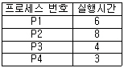
- P1
- P2
- P3
- P4
(정답률: 60%)
51. 가상메모리의 교체 정책중 LRU(Least Recently Used) 알고리즘으로 구현할 때 그림에서 D 페이지가 참조될 때의 적재되는 프레임으로 옳은 것은?(단, 고정 프레임이 적용되어 프로세스에 3개의 프레임이 배정되어 있고, 4개의 서로 다른 페이지(A,B,C,B)를 B, C, B, A, D 순서로 참조한다고 가정한다.)
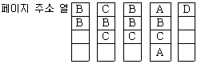
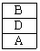
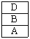
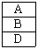
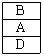
(정답률: 51%)
52. 분산 운영체제에 대한 설명으로 옳지 않은 것은?
- 시스템 변경을 위한 점진적인 확대 용이성
- 고가의 하드웨어에 대한 여러 사용자들 간의 공유
- 빠른 응답시간
- 향상된 보안성
(정답률: 65%)
53. 교착상태의 해결 방법중 Banker's Algorithm과 관계되는 것은?
- Avoidance
- Prevention
- Detection
- Recovery
(정답률: 57%)
54. 다음 설명에 해당하는 디렉토리 구조는 무엇인가?
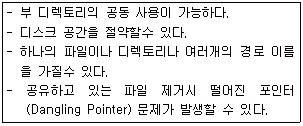
- 비순환 그래프 디렉토리 시스템
- 트리 구조 디렉토리 시스템
- 1단계 디렉토리 시스템
- 2단계 디렉토리 시스템
(정답률: 49%)
55. 파일 디스크립터(File Descriptor)에 대한 설명으로 옳지 않은 것은?
- 파일 관리를 위한 파일 제어 블록이다.
- 시스템에 따라 다른 구조를 가질 수 있다.
- 보조기억장치에 저장되어 있다가 파일이 개발될 때 주기억 장치로 옮겨 진다.
- 사용자의 직접 참조가 가능하다.
(정답률: 59%)
56. 보안 유지 기법 중 하드웨어나 운영체제에 내장된 기능으로 프로그램의 신뢰성 있는 운영과 데이터의 무결성을 보장하기 위한 기능과 관련된 것은?
- 사용자 인터페이스 사용
- 내부 보안
- 외부 보안
- 시설 보안
(정답률: 62%)
57. 다음은 무엇에 대한 설명인가?
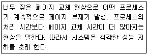
- Locality
- Segmentation
- Thrashing
- Working-Set
(정답률: 65%)
58. 주기억장치 관리기법인 First-fit, Best-fit, Worst-fit 방법을 각각 적용할 경우 10K 프로그램이 할당될 영역의 순서대로 옳게 짝지어진 것은?
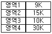
- 2, 3, 4
- 2, 2, 3
- 2, 3, 2
- 2, 1, 1
(정답률: 69%)
59. 페이지 교체기법 중 시간 오버헤드를 줄이기 위해 각 페이지 마다 참조 비트와 변형 비트를 두는 교체기법은?
- LRU
- FIFO
- LFU
- NUR
(정답률: 49%)
60. 운영체제를 기능별로 분류할 경우 제어 프로그램과 처리 프로그램으로 구분할 수 있다. 다음중 처리 프로그램만으로 짝지어진 것은?
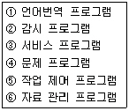
- ②, ④, ⑤
- ① ,②, ④, ⑥
- ①, ③
- ①, ②
(정답률: 49%)
4과목: 소프트웨어 공학
61. 설계 기법중 하향식 설계 방법과 상향식 설계 방법에 대한 비교 설명으로 옳지 않은 것은?
- 하향식 설계에서는 통합 검사시 인터페이스가 이미 정의되어 있어 통합이 간단하다.
- 하향식 설계에서 레벨이 낮은 데이터 구조의 세부 사항은 설계 초기 단계에서 필요하다.
- 상향식 설계는 최하위 수준에서 각각의 모듈들을 설계하고 이러한 모듈이 완성되면 이들을 결합하여 검사한다.
- 상향식 설계에서는 인터페이스가 이미 성립되어 있지 않더라도 기능 추가가 쉽다.
(정답률: 45%)
62. FTR(Formal Technical Reciew)의 검토 지침사항으로 옳지 않은 것은?
- 문제 영역을 명확히 표현한다.
- 의제를 제한하여 진행한다.
- 참가자의 수를 제한한다.
- 논쟁과 반박에 제한을 두어서는 안된다.
(정답률: 60%)
63. 자료 사전에서 자료의 생략을 의미하는 기호는?
- { }
- **
- =
- ( )
(정답률: 57%)
64. 화이트 박스 시험(White Box Testing)의 설명으로 옳지 않은 것은?
- 프로그램 제어구조에 따라 선택, 반복 등의 부분들을 수 행함으로써 논리적 경로를 점검한다.
- 모듈안의 작동을 직접 관찰할 수 있다.
- 소프트웨어 산물을 각 기능별로 적절한 정보영역을 정하여, 적합한 입력에 대한 출력의 정확성을 점검한다.
- 원시코드의 모든 문장을 한번 이상 수행함으로써 진행된다.
(정답률: 44%)
65. 람바우의 모델링에서 상태도와 자료흐름도는 각각 어떤 모델링과 관련이 있는가?
- 상태도 - 기능 모델링, 자료흐름도 - 동적 모델링
- 상태도 - 객체 모델링, 자료흐름도 - 기능 모델링
- 상태도 - 객체 모델링, 자료흐름도 - 동적 모델링
- 상태도 - 동적 모델링, 자료흐름도 - 기능 모델링
(정답률: 41%)
66. 프로그램 설계도의 하나인 NS(Nassi-Schneiderman) chart에 대한 설명으로 옳지 않은 것은?
- 논리의 기술에 중점을 둔 도형을 이용한 표현 방법이다.
- 박스, 다이아몬드, 화살표 등의 기호를 사용하므로 읽고 작성하기가 매우 쉽다.
- 이해하기 쉽고 코드로 변환이 용이하다.
- 연속, 선택, 반복 등의 제어 논리 구조를 표현한다.
(정답률: 46%)
67. CPM(Critical Path Method)에 대한 설명으로 옳지 않은 것은?
- 각 작업은 왼쪽 열에 명시되어 , 수평 막대는 각 작업의 기간을 나타낸다.
- 프로젝트 진행 일정 계획을 작성하기 위한 방법이다.
- 프로젝트 내에서 각 작업이 수행되는 시간과 작 작업 사이의 관계를 파악하도록 한다.
- 각 작업의 순서와 의존관계, 어느 작업이 동시에 수행되는 지를 한눈에 파악할 수 있다.
(정답률: 44%)
68. 프로그램 품질관리의 한 방법으로써 워크스루(Walk-through)와 인스펙션(Inspection)이 있다. 워크스루에 대한 설명으로 옳지 않은 것은?
- 소프트웨어 품질을 검토하기 위한 기술적 검토 회의이다.
- 제품 개발자가 주최가 된다.
- 오류 발견과 발견된 오류의 문제 해결에 중점을 둔다.
- 검토 자료는 사전에 미리 배포한다.
(정답률: 40%)
69. 소프트웨어 재공학(Reengineering)에 관한 설명으로 거리가 먼것은?
- 현재의 시스템을 변경하거나 재구조화(Restructuring) 하는 것이다.
- 재구조화는 재공학의 한 유형으로 사용자의 요구 사항이나 기술적 설계의 변경 없이 프로그램을 개선하는 것이다.
- 재개발(Redevelopment)과 재공학은 동일한 의미이다.
- 사용자의 요구사항을 변경시키기 않고 기술적 설계를 변경하여 프로그램을 개선하는 것도 재공학이다.
(정답률: 53%)
70. 시스템에서 모듈 사이의 결합도(Coupoing)에 대한 설명으로 옳은 것은?
- 한 모듈 내에 있는 처리요소들 사이의 기능적인 연관 정도를 나타낸다.
- 결합도가 높으면 시스템을 구현 및 유지 보수작업이 쉽다.
- 모듈간의 결합도를 약하게 하면 모듈 독립성이 향상된다.
- 자료 결합도는 내용 결합도 보다 결합도가 높다.
(정답률: 48%)
71. 다음 설명에 해당하는 생명주기 모형은?
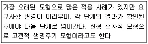
- 폭포수 모형(Waterfall Model)
- 프로토타입 모형(Prototype Model)
- 코코모 모형(Cocomo Model)
- 점진적 모형(Spiral Model)
(정답률: 67%)
72. 프로젝트 계획 단계에 대한 설명으로 옳지 않은 것은?
- 제한된 자원과 일정에 대한 최적의 방법을 찾고자 노력해야 한다.
- 계획에 따라 소프트웨어 품질이 결정되기도 한다.
- 비용 추정에 관한 문제는 계획 단계에 포함되지 않는다.
- 계획 단계에서 프로젝트 관리자의 임무는 매우 중요하다.
(정답률: 66%)
73. 객체지향 소프트웨어 공학에서 다음의 예는 무엇을 의미하는가?
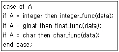
- 클래스
- 다형성
- 상속성
- 캡슐화
(정답률: 48%)
74. CASE(Computer-Aided Software Engineering)에 대한 설명으로 옳지 않은 것은?
- 소프트웨어 부품의 재사용성을 향상시켜 준다.
- Rayleigh-Norden 곡성의 노력 분포도를 기초로 한 생명 주기 예측 모형이다.
- 소프트웨어 생명 주기의 모든 단계를 연결시켜 주고 자동화 시켜 준다.
- 소프트웨어의 유지 보수를 용이하게 수행할 수 있도록 해준다.
(정답률: 53%)
75. 객체지향 설계에 대한 설명으로 옳지 않은 것은?
- 객체지향 설계에 있어 가장 중요한 문제는 시스템을 구성하는 객체와 속성, 연산을 인식하는 것이다.
- 시스템 기술서의 동사는 객체를, 명사는 연산이나. 객체 서비스를 나타낸다.
- 객체지향 설계를 문서화 할 때 객체와 그들의 부객체(Sub-Object)의 계층적 구조를 보여주는 계층차트를 그리면 유용하다
- 객체는 순차적으로(Sequentially) 또는 동시적으로(Concurrently) 구현될 수 있다.
(정답률: 48%)
76. COCOMO(COnstructive COst MOdel) 비용 예측 모델에 대한 설명으로 옳지 않은 것은?
- 보헴이 제안한 원시 프로그램의 규모에 의한 비용 예측 모형이다.
- 소프트웨어의 종류에 따라 다르게 책정되는 비용산정 방정식을 이용한다.
- COCOMO 방법은 가정과 제약조건이 없어 모든 시스템에 동일하게 적용할 수 있다.
- 같은 규모의 프로그램이라도 그 성격에 따라 비용이 다르게 산정된다.
(정답률: 57%)
77. 유지보수의 종류 중 소프트웨어 테스팅 동안 밝혀지지 않은 모든 잠재적인 오류를 수정하기 위한 보수 형태로써 오류의 수정과 진단을 포함하는 것은?
- Adaptive maintenance
- Perfective maintenance
- Preventive maintenance
- Corrective maintenance
(정답률: 51%)
78. 소프트웨어 재공학의 주요 활동중 다음 설명에 해당하는 것은?
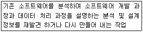
- Analysis
- Reverse Engineering
- Restructuring
- Migration
(정답률: 52%)
79. 소프트웨어 품질목표 중 쉽게 배우고 사용할 수 있는 정도를 나타내는 것은?
- Correctness
- Reliability
- Usability
- Integrity
(정답률: 63%)
80. 나선형(Spiral) 모형에서 각 단계마다 실시되는 작업의 절차로 옳은 것은?
- 계획수립 → 위험분석 → 개발 → 평가
- 계획수립 → 요구분석 → 설계 → 구현
- 계획수립 → 구현 → 인수/설치 → 평가
- 계획수립 → 요구분석 → 평가 → 구현
(정답률: 44%)
5과목: 데이터 통신
81. 다음 중 비적응경로배정 방식인 플러딩(Flooding)에 대한 설명으로 가장 옳은 것은?
- 각 모드에 들어오는 패킷을 도착된 링크를 제외한 다른 모든 링크로 복사하여 전송하는 방식이다.
- 네트워크의 모든 근원지, 목적지 노드의 쌍에 대해서 한 경로씩을 미리 결정해 두는 방식이다.
- 네트워크의 변화하는 상태에 따라 반응하여 경로를 결정 한다.
- 단순성과 견고성을 띄면서 트래픽의 부하를 훨씬 적게한 방식으로 노드는 들어오는 패킷에 대한 나가는 경로를 무작위로 1개만 선택한다.
(정답률: 41%)
82. 데이터 프레임을 연속적으로 전송해 나가다가 NAK를 수신하게 되면, 오류가 발생한 프레임 이후에 전송된 모든 데이터 프레임을 재전송하는 방식이다.
- Stop-and-Wait
- Stop-and-Wait ARQ
- Go-back-N ARQ
- ARQ(Automatic Repeat reQuest)
(정답률: 58%)
83. 라우팅(Routing) 프로토콜에 해당하지 않는 것은?
- BGP(Border Gateway Protocol)
- EGP(Exterior Gateway Protocol)
- SNMP(Simple Network Protocol)
- RIP(Routing Information Protocol)
(정답률: 59%)
84. 다음중 데이터링크 제어 프로토콜에 해당하는 것은?
- TCP
- DTE
- HDLC
- UDP
(정답률: 46%)
85. RTCP(Real-Time Control Protocol)의 특징으로 옳지 않은 것은?
- Session의 모든 참여자에게 컨트롤 패킷을 주기적으로 전송한다.
- RTCP 패킷은 항상 16비트의 경계로 끝난다.
- 하위 프로토콜은 데이터 패킷과 컨트롤 패킷의 멀티 플렉싱을 제공한다.
- 데이터 전송을 모니터링 하고 최소한의 제어와 인증 기능을 제공한다.
(정답률: 49%)
86. 다음중 비연결형(Connectionless) 네트워크 프로토콜에 해당하는 것은?
- HTTP
- TCP
- IP
- X.25
(정답률: 38%)
87. X.25 프로토콜에서 정의 하고 있는것은?
- 다이얼 접속(Dial Access)을 위한 기술
- Start-Stop 데이터를 위한 기술
- 데이터 비트 전송률
- DTE/DCE 인터페이스
(정답률: 48%)
88. HDLC는 링크 구성 방식에 따라 세가지 동작 모드를 가지고 있다. 다음중 해당하지 않은 것은?
- 정규 응답 모드(NRM)
- 비동기 응답 모드(ARM)
- 비동기 균형 모드(ABM)
- 정규 균형 모드(NBM)
(정답률: 52%)
89. 다음이 설명하고 있는 프로토콜은?
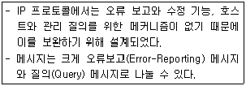
- IGMP(Internet Group Management Protocol)
- ICMP(Internet Control Message Protocol)
- BOOTP(Bootstrap Protocol)
- IPv4(Internet Protocol version 4)
(정답률: 56%)
90. 인터넷 응용서비스 중 가상 터미널(Virtual Terminal) 기능을 갖는 것은?
- FTP
- Archie
- Gopher
- Telnet
(정답률: 58%)
91. 다음이 설명하고 있는 에러 검출 방식은?
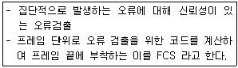
- Cyclic Redundancy Check
- Hamming Code
- Parity Check
- Block Sum Check
(정답률: 48%)
92. 무선 LAN의 장점으로 볼 수 없는 것은?
- 효율성
- 확장성
- 이동성
- 보안성
(정답률: 64%)
93. 다음이 설명하고 있는 다중 접속 방식은?
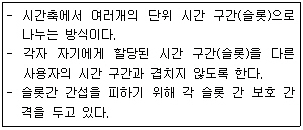
- FDMA
- CDMA
- SDMA
- TDMA
(정답률: 56%)
94. 다음 TCP/IP 관련 프로토콜 중 하이퍼텍스트 전송을 위한 프로토콜은?
- HTTP
- SMTP
- SNMP
- Mailto
(정답률: 66%)
95. 무선 LAN의 매체 접근 제어 방식중 경쟁에 의해 채널 접근을 제어하는 것은?
- PSK
- ASK
- DCF
- PCF
(정답률: 39%)
96. HDLC 프레임의 종류 중 링크의 설정과 해제, 오류 회복을 위해 주로 사용되는 것은?
- I-Frame
- U-Frame
- S-Frame
- R-Frame
(정답률: 35%)
97. 문자 위주의 전송에서 투명한 데이터의 전달을 위해 사용되는 제어 문자로 옳은 것은?
- DLE
- STX
- SYN
- DTM
(정답률: 47%)
98. TCP/IP 모델 중 패킷을 목적지까지 전달하기 위해 경로선택과 폭주 제어 기능을 가지고 있으며 ARP, RARP, ICMP 등의 프로토콜이 제공되는 계층은?
- 응용계층
- 전송계층
- 인터넷계층
- 물리계층
(정답률: 36%)
99. 전송 속도가 10Mbps이고, 버스의 총 길이가 2500m인 경우에 한 비트를 전송하는데 소요되는 비트 시간이 1us 라고 할 때 슬롯 크기는 몇 bit인가? (단, 4개의 리피터를 사용하여 500m짜리 LAN 세그먼트를 5개 연결할 경우이며, 슬롯 시간은 51.2us이다.)
- 64
- 128
- 256
- 512
(정답률: 28%)
100. 다음 베이스 밴드 전송 방식중 비트 간격의 시작점에서는 항상 천이가 발생하며, “1”의 경우에는 비트 간격의 중간에서 천이가 발생하고 “0”의 경우에는 비트 간격의 중간에서 천이가 없는 방식은?
- NRZ-L 방식
- NRZ-M 방식
- NRZ-S 방식
- NRZ-I 방식
(정답률: 40%)
DES 알고리즘에서는 평문을 64비트 블록으로 나누어 암호화를 진행한다. 이때, 키의 길이는 56비트이다. 하지만, 실제로는 64비트 중 8비트는 패리티 비트로 사용되므로, 실제 키의 비트 수는 56비트가 된다. 따라서, "① 64 ② 56"이 정답이다.